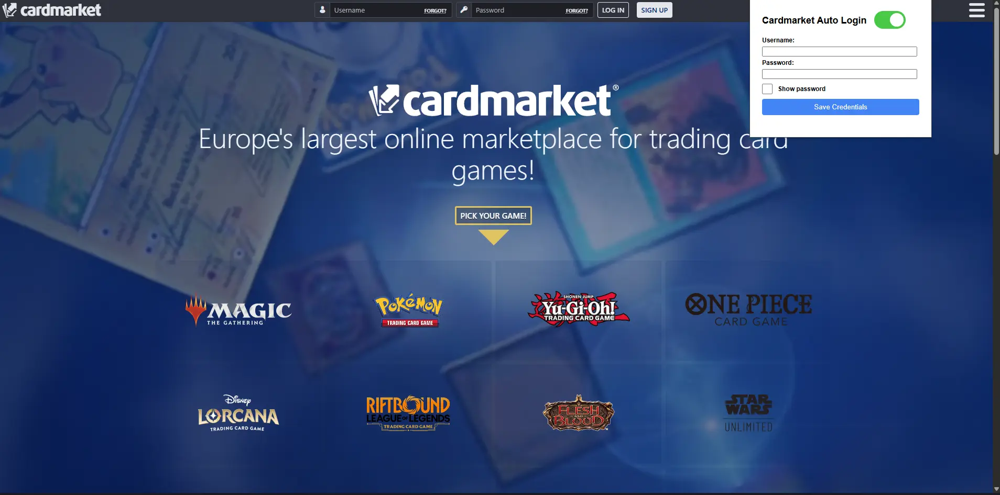

01

Cardmarket Auto-Login
Chrome extension for one-click login to Cardmarket, with locally-encrypted credential storage. AES-GCM encryption with PBKDF2 key derivation; no data ever leaves the user's device. Published on the Chrome Web Store.